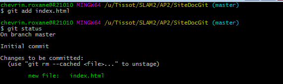
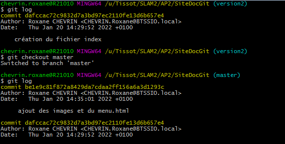

| Git init |
La commande git-init permet de crér un dépôt Git vide ou réinitialise un dépôt existant, elle permet d'initialise un depot pour aopr'es commencer les commandes gits. |
 |
| Git statuts |
Elle affiche la liste des fichiers modifiés ainsi que
les fichiers qui doivent encore être ajoutés
ou validés. |
 |
| Git add |
La commande git-add indexe les modifications qui ont été faites dans les fichiers du répertoire de travail et prépare ainsi le prochain comm |
 |
| Git commit |
La commande git-commit permet d'enregistrer les modifications dans le référenciel |
 |
| Git checkout |
La commande git checkout permet de basculer sur une autre branche ou restaure des fichiers de l’arbre de travail |
 |
| Git log |
La commande git-log permet d'afficher l'historique des différents commits effectués dans un projet. En précisant un nom de fichier en argument de la commande, on peut obtenir l'historique de ce seul fichier. |
 |
| Git push |
La commande git push permet de charger le contenu d'un dépôt local vers un dépôt distant |
 |